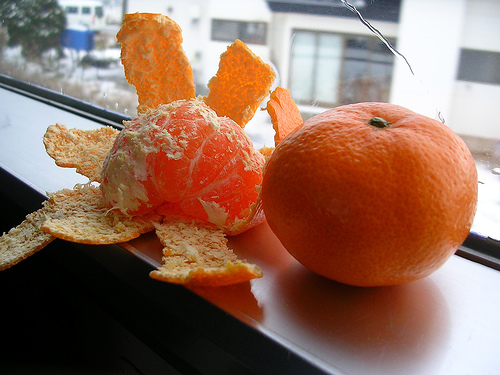

じゃありません Practice Questions
“Effective people are not problem-minded; they’re opportunity-minded.” – Stephen Covey
At this point, we’re going to take a look at some questions and answers, and you’ll practice じゃありません (as well as the other stuff you’ve learned up until now). Just follow along and enjoy all the pretty pictures.
| Original | Hiragana | English |
|---|---|---|
| 猫 | ねこ | cat |
| 犬 | いぬ | dog |
| 自転車 | じてんしゃ | bicycle |
| 林檎 | りんご | apple |
| みかん | みかん | tangerine |
| 新聞 | しんぶん | newspaper |
| 桜ん坊 | さくらんぼ | cherry |
| 桃 | もも | peach |
| 日本 | にほん | Japan |
Take a look at the first picture here…

Q. みかんですか？
To start, take a look at this question. First, you’ll probably want to figure out what a みかん is. Then, you’ll want to try and figure out what this sentence says. Can you translate it?
Is it a tangerine?
Now, if someone were to ask this question, how would you respond in Japanese? I’ll give you a hint, you’ll want to say “Yes, it is a…” Go ahead and try to figure it out, then click “Response,” below.
a はい、みかんです。Yes, it is a tangerine
Q. さくらんぼですか？
Same as the last one – figure out what this sentence is saying first. Can you figure it out?
Is it a cherry?
Now, the response to this question. Let’s see if you can figure it out – I’ll explain it after you try. One hint, though. “No” in Japanese is いいえ.
a いいえ、さくらんぼ じゃありません。 No, it is not a cherry
It’s just like the pattern we learned before, except the opposite. Instead of saying はい、＿＿＿です (yes, it is a ______) we’re saying いいえ、＿＿＿＿じゃありません (no, it is not a ______). As long as you learned はい、＿＿＿＿です fairly well, this concept should be very easy as well, as it’s pretty much the same.
Let’s take a look at a few more practice questions.
Q. ももですか？
P.S. This question is still pointing to the first picture in this lesson (the みかん)
Is it a peach?
a いいえ、ももじゃありません (no, it is not a peach)
Now, using grammar you already know, we can expand this even further. Right now, you’re simply saying “No, it is not a _____.” From here, the natural thing to do is to further explain what something is, since you just told someone what something wasn’t.